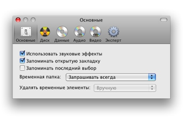
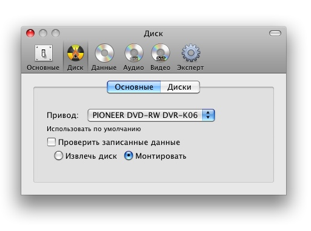
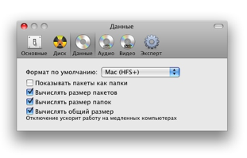
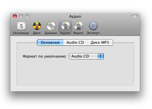
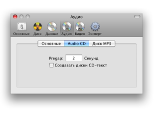
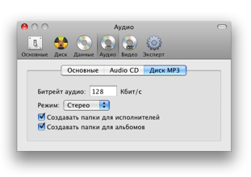
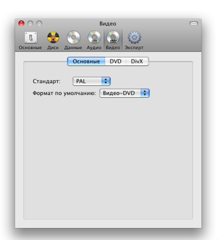
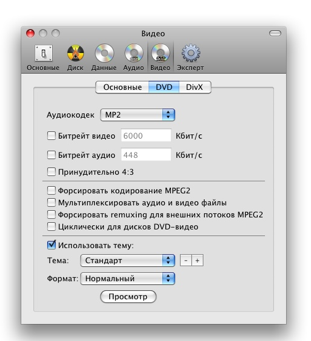
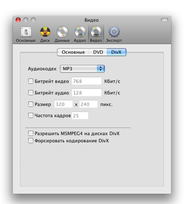
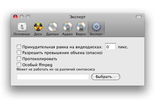

Настройки
У Burn множество настроек. Рассмотрим их.
Основные:

Основные параметры интерфейса Burn. Кроме того, место
размещения временных файлов и правила работы с ними.
Привод:

Привод, используемый по умолчанию, и действия после
записи.

При выборе первого параметра в окне Burn будет отображено
дополнительное пространство для возможной записи.
Последний параметр определяет, как будет рассчитываться пространство,
если в привод не установлен чистый диск.
Данные:

Можно выбрать формат данных по умолчанию, если Burn не
запоминает последний сделанный выбор (настраивается в «Основных»).
Пакеты — папки особого вида, представляемые в Finder как файлы.
Здесь можно настроить, как Burn будет их показывать. Можно также
установить, какие размеры будут вычисляться. Последний параметр сильно
нагружает процессор.
Аудио:

Можно выбрать формат аудио по умолчанию, если Burn не
запоминает последний сделанный выбор (настраивается в «Основных»).

Настройки Audio-CD. Pregap время в секундах перед
началом аудиодорожки. CD-Text дополнительный текст. Некоторые
проигрыватели CD
могут использовать его для получения информации о записях (исполнитель,
альбом и т.п.).
Но эта функция должна поддерживаться приводом.

Настройки диска MP3. Битрейт — скорость потока в килобитах в секунду.
Большее значение приводит к большему размеру файла,
но дает и более высокое качество. Burn может создавать на диске MP3
папки.
Видео:

Можно выбрать формат видео по умолчанию, если Burn не
запоминает последний сделанный выбор (настраивается в «Основных»).
Также здесь можно установить регион.

Настройки DVD позволяют выбрать качество, размер и формат аудиодорожки.
Также имеются дополнительные параметры, которые могут быть полезны при
создании
дисков DVD-Video. В последнем разделе выбирается тема оформления и
пропорции экрана: Нормальный
(4:3) или Широкий (16:9).

Настройки Divx также включают параметры качества, размера и формата аудиодорожки. Можно включить MSMPEG4, но это поддерживается не всеми проигрывателями DivX. Чтобы конвертировать файлы avi, уже представленные в формате Divx, необходимо форсировать кодирование.
Эксперт:

Сохранить рамку — будет создаваться рамка, помогающая
просматривать видео
на проигрывателях, избыточно увеличивающих кадр. Этот параметр пока не
полностью
реализован, соотношение сторон не вычисляется. Если разрешено
превышение объема,
не будет выдаваться предупреждение при некотором превышении объема
диска. Используйте этот параметр с осторожностью,
поскольку неизвестно, насколько это поддерживается приводами.
Протоколирование
полезно при определении проблем в работе Burn. Burn использует для
конвертирования видео- и аудиофайлов ffmpeg. Вы может использовать
вместо встроенного свою собственную версию, но
работоспособность в этом случае не гарантирована.